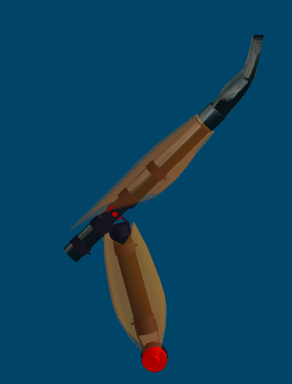
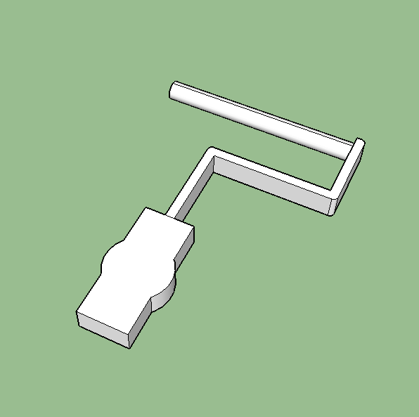
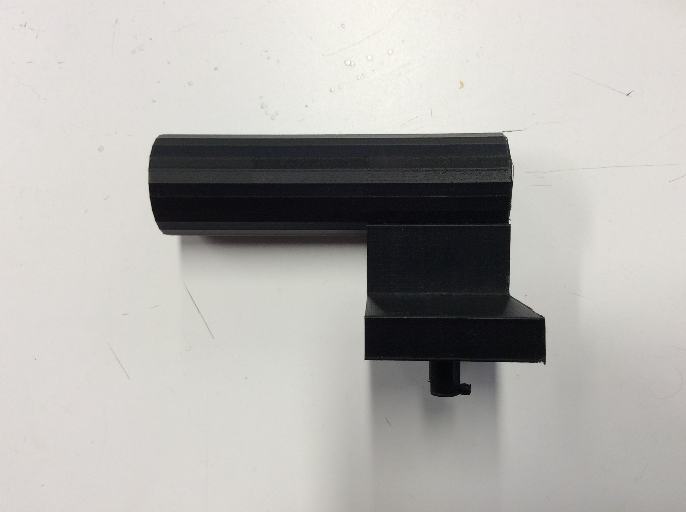
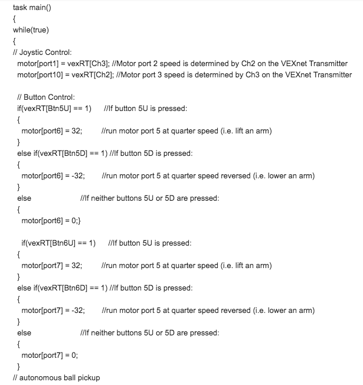
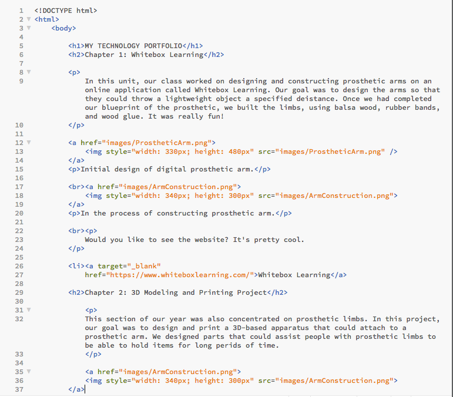

In this unit, our class worked on designing and constructing prosthetic arms on an online application called Whitebox Learning. Our goal was to design the arms so that they could throw a lightweight object a specified deistance. Once we had completed our blueprint of the prosthetic, we built the limbs, using balsa wood, rubber bands, and wood glue. It was really fun!
Here's an initial design of my digital prosthetic arm.
Right now, we are in the process of constructing a prosthetic arm.
Would you like to see the website? It's pretty cool.
This section of our year was also concentrated on prosthetic limbs. In this project, our goal was to design and print a 3D-based apparatus that could attach to a prosthetic arm. We designed parts that could assist people with prosthetic limbs to be able to hold items for long perids of time.
This is a picture of my paint roller apparatus on the 3D modeling website, SketchUp.
Check out the website!
During this chapter, we built robots from scratch! Using nuts, bolts, screws, motors, and wheels, we were able to construct a functioning fighter-machine! Using the coding language C++, we programmed the robots to respond to the press of a button on a joystick. For example, when we turned the joystick to the right, we programmed the robot to also turn right. It was very rewarding, watching our robots successfully respond to command.
Here are three pictures of our VEX code.
Here is a picture that captured our in-class work on the VEX robots! We worked in small groups.
This image also shows our in-class construction of the machines.
Our final unit in Technology this year was learning how to code and design websites. To conclude the year, our teacher, Mrs. Trout, wanted us to learn the programming languages HTML and CSS parly because it is just useful to know, but also because she wanted us to make our own digital portfolios. To make a simple analogy to the structure of a building, HTML correlates with the pillars and columns that bare the full weight of the entire structure, and CSS would be all of the plumbing and lighting within the building - both are extremely necessary to have and maintaining a functioning facility. Similarly, websites are fundamentally constructed using the coding language HTML, but they are "beautified" using CSS.
{kind=link}
{kind=link}